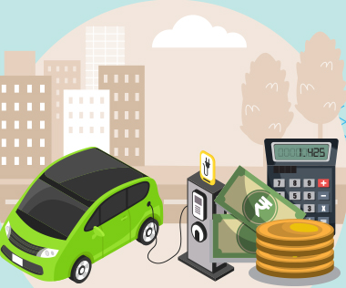

Low maintenance cost
Electric vehicles have very low maintenance costs because they don’t have as many moving parts as an internal combustion vehicle. The servicing requirements for electric vehicles are lesser than the conventional petrol or diesel vehicles. Therefore, the yearly cost of running an electric vehicle is significantly low.
Read MoreZero Tailpipe Emissions
Driving an electric vehicle can help you reduce your carbon footprint because there will be zero tailpipe emissions. You can reduce the environmental impact of charging your vehicle further by choosing renewable energy options for home electricity.
Read More
Financial benefits
Registration fees and road tax on purchasing electric vehicles are lesser than petrol or diesel vehicles. There are multiple policies and incentives offered by the government depending on which state you are in. To find out more about electric vehicle incentives, click below .
Read More